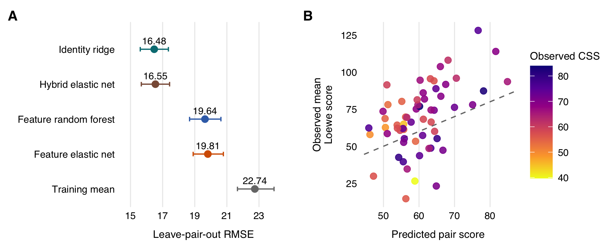

Drug combination prediction
An analysis of the O'Neil oncology screen, with code for predicting new pairings of known drugs and evaluating candidates for follow-up experiments.
Prediction and candidate ranking

Model comparison
| Model | RMSE |
|---|---|
| Training mean | 22.739 |
| Identity ridge | 16.476 |
| Feature elastic net | 19.815 |
| Hybrid elastic net | 16.551 |
| Feature random forest | 19.637 |
What the example shows
The analysis covers 22,737 observations from 583 drug pairs and 39 cell lines. All observations for a pair stay together during validation. Both drugs and every cell line remain represented in training.
The identity ridge model performs best in this setting. Among the top 10% of predicted triplets, 91% have an observed Loewe score above 10, compared with 34.4% overall. CSS is examined after ranking to describe combination activity.
Among the 60 displayed pairs, 43 have observed scores above prediction. The mean difference over all 60 pairs is 8.55. The candidate list remains concentrated around a few drugs.
Reproduce the example
The reference environment uses R 4.6.1 and Python 3.12. Package versions and source files are fixed. Run these commands from the repository root.
Download code and summary results, then extract the archive before setting up the environment.
Environment setup
python3.12 -m venv .venv
.venv/bin/python -m pip install -r requirements.txt
Rscript --vanilla setup.ROn Windows, use .venv\Scripts\python.exe in place of .venv/bin/python. R packages are installed in a project-local library. Some locked versions require compilation.
Full analysis:
.venv/bin/python scripts/acquire_sources.py
Rscript --vanilla run_all.RTo redraw the figure directly from the released summary tables, run Rscript --vanilla run_figures.R. This route requires no raw data and does not refit the models.
Reproduction checks cover input hashes, validation folds, manuscript values, and figure metadata. Individual predictions and processed datasets are generated locally.
Data and methods
The primary outcome is the published DeepSynergy Loewe synergy score. DrugComb supplies matched CSS records and identifiers. Source versions and reuse terms are documented in the data guide.
- O'Neil et al. (2016): the oncology combination screen.
- Preuer et al. (2018): DeepSynergy labels and molecular features.
- Zheng et al. (2021): the DrugComb data resource.
- Malyutina et al. (2019): combination sensitivity scoring.